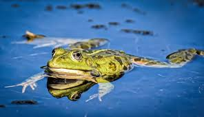
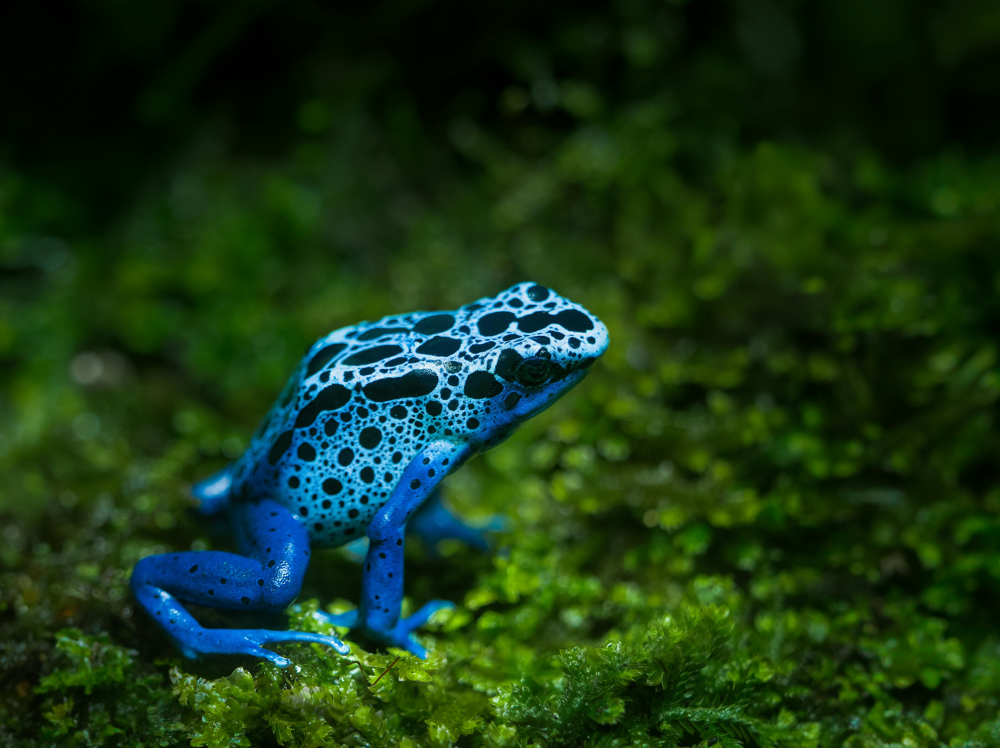

Frogs are incredibly cool. Humanity is lucky to exist alongside such a goofy animal. The term for a group of Frogs is an "army". How cool is that?
Frogs are amphimbians in the order "Anura". Their young develop in stages from eggs to tadpoles to poliwogs to froglets and finally into frogs. They breathe through their skin and have webbed feet. They are great at jumping and eating insects.


| Frogs | Toads |
|---|---|
| Smooth, moist skin | Warty, dry skin |
| Longer legs | Shorter legs |
| Live near/in water | Live mostly on land |